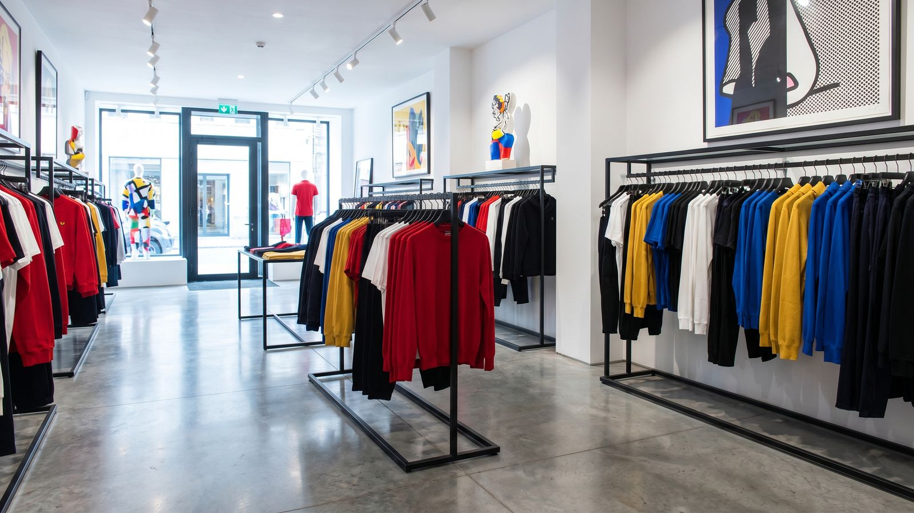
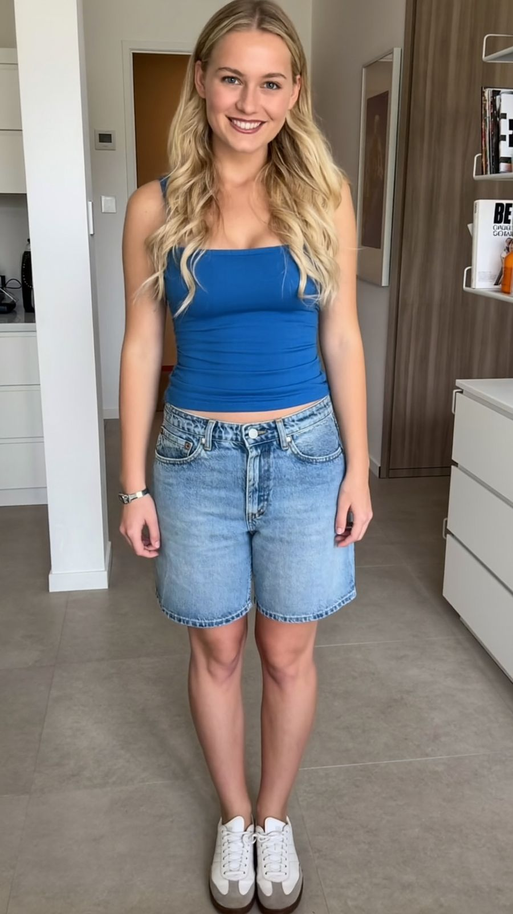
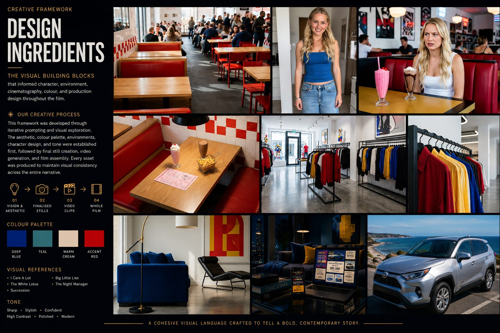

Every frame generated — no shoot, no crew, no location fee.
AnalysisThe three-second rule
3 seconds to feel seen.
The first job is not to sell a car. It is to make the viewer think: this is exactly how I decide.
Recognition earns the next twenty-eight seconds. Everything in the film is ordered around that — the joke lands before the brand does, and the claim only arrives once the problem is felt.
Human psychologyChoice overload
More options. Less confidence.
Modern buyers are not short of choice. They are short of relief from the pressure of making the perfect choice. They are not asking for more inventory. They are asking for less pressure.
CompareMore inputsEvery extra tab adds information and subtracts certainty.
DelayLess certaintyThe decision gets postponed rather than made.
ReopenThe same decisionAnd the whole loop starts again from the top.
It is funny because the behaviour is true.
The hook device
Film beat mapFive beats, one cure arc
The idea became a five-beat cure arc.
The finished film moves from comic overload to claim-backed calm: attention first, then choice pressure, then the solution.
Beat 01
Diner hook
Option Overloadia lands in the first three seconds. Two milkshakes, one person, and a decision that should be trivial.

Beat 02
Choice swipe
Outfit changes become decision fatigue. The cutting speeds up as the certainty drops.
Beat 03
Option overload
Car cards crowd the living-room world until the space itself is unusable. The pressure peaks here.
Beat 04
Claim relief
Price Match and the 30-Day Return reduce the risk — the claims arrive as emotional relief, not as a feature list.
Beat 05
Mind at ease
The decision becomes movement. No celebration, no hard sell — just someone who can finally go.
02How it was madeHiggsfield Supercomputer ›
Generation systemBrief → output
The brief is broken into controllable steps.
This is how the process avoids one giant prompt. Each stage makes the film easier to steer, compare, refine and expand — a creative workflow layer rather than a single generator.
01 · BriefIdea, audience, toneA point of view on the page before anything is generated.
02 · ConstantsCharacter, world, cameraThe rules every shot has to obey.
03 · ScenesScene-level promptsEach beat written as its own mini brief.
04 · AnchorsSoul Character + tagsIdentity and place locked so they survive every render.
05 · VariantsCompare the routesStrongest options set side by side, not judged in isolation.
06 · ContextFeed winners backWhat worked becomes an input for the next pass.
07 · AssetsClips and pitch visualsFilm, stills and deck out of one pipeline.
Soul CharacterSame person, new shot

The person needs an identity anchor.
Chloe holds the same emotional and visual DNA across every scene. Without a locked identity, a generated film quietly becomes five different people in five different worlds.
Face identity
Consistent across all beats
Styling language
One wardrobe logic
Emotional tone
Wry, not slapstick
Role clarity
The buyer, never the brand
Location tagsSame story, connected worlds
The world needs rules too.
Place type, mood, props, architecture, time of day, lighting and repeated visual cues — fixed per location, so four environments still read as one film.
Diner
First hook
Wardrobe
Choice swipe
Living room
Comparison loop
Car
Decision relief
Visual grammarMoodboard → language
A moodboard gave the machine a language.
Instead of asking for a generic car film, each emotional beat was translated into a visual rule: busy world, compressed choice, comic pressure, then calm certainty.

Design ingredients
The claimsRisk removed, not features listed
Turn the claim into emotional relief.
The 30-Day Return is the big promise; Price Match is the practical confidence behind it. In the film they land as the moment the pressure drops — not as a bullet list.
30-Day Return
The emotional payoff — permission to change your mind.
Price Match
The practical proof that stops the comparing.
IterationNot one prompt and done
Every render became feedback.
Each pass was reviewed for consistency, character detail, scene logic, camera energy, and how clearly the claim landed. The taste check is the part that cannot be automated.
Prompt→Render→Critique→Refine↻
OutcomeDesigner enablement
A visible pitch, before production.
A marketing designer can move from an idea to a film-like vision internally — then bring an agency in with a stronger, sharper brief.
01
Faster stakeholder buy-in
02
Fewer blind agency briefs
03
More claim-led film routes
04
Agency time used for scale and craft
Key learningsWhat I'd carry into the next one
The system is the deliverable.
The film was the visible output. The reusable part — a locked character, stable locations, a prompt structure and a review loop — is what makes the second film cost a fraction of the first.
01Strategy firstThe tool only performs when the brief already has a point of view. A sharp deck beat a clever prompt every time.
02Anchor before you scaleIdentity and location had to be locked early. Retrofitting consistency across finished shots is far more expensive.
03Taste stays humanGeneration is cheap; judging which route lands the claim is the part that decides whether the film works.